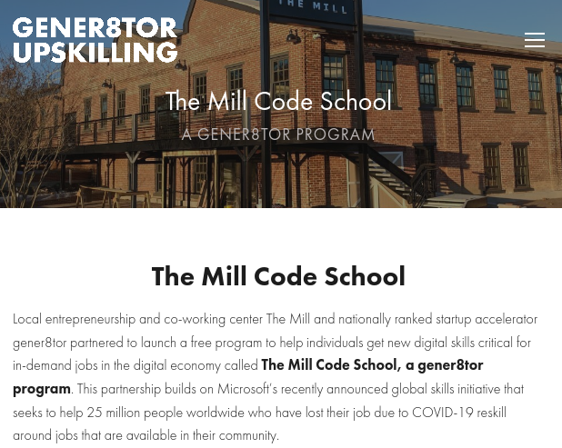

COVID-19 and the extra stresses beyond it put me into a mindset of "what next"?
But part way through the year, I came across this poem and wondered if the crises were my problem or my attitude toward the problem.
I started thinking of the rules and issues as opportunities to think differently. I felt more peaceful and didn't react the same way to circumstances. I paused and considered responses instead.
When information about The Mill Code School caught my eye, I recognized a challenging opportunity that could not have presented itself at a better time. I brought an open mind and motivated curiosity to the experience. I decided I could just show up each day, do my best, and let the outcome take care of itself.
Participation in this program has shaped my work habits, improved my understanding of both coding and business soft skills, and helped me think about my future and how I might continue to grow as a developer. LinkedIn Learning provided the curriculum and every module was high quality and useful. The structure of learning created a great atmosphere for practice and recommended many useful tools.
The professional and approachable presence of the gener8or team (especially Cole's great leadership), support from The Mill, guest speakers at Lunch and Learns, Jason my Technical Coach, my excellent Career Coach Claire, and mock interviews have been more than what I hoped for from this 10 week intensive.
My gratitude also extends to The City of Bloomington and the Recover Forward initiative
For many people, COVID-19 stole a year. For me, COVID-19 gave me motivation and direction in my personal and professional life. It cleared me "out for some new delight".